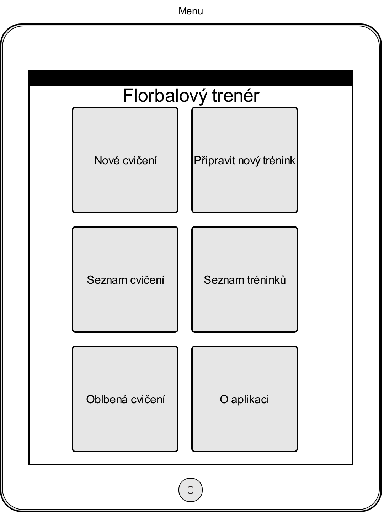
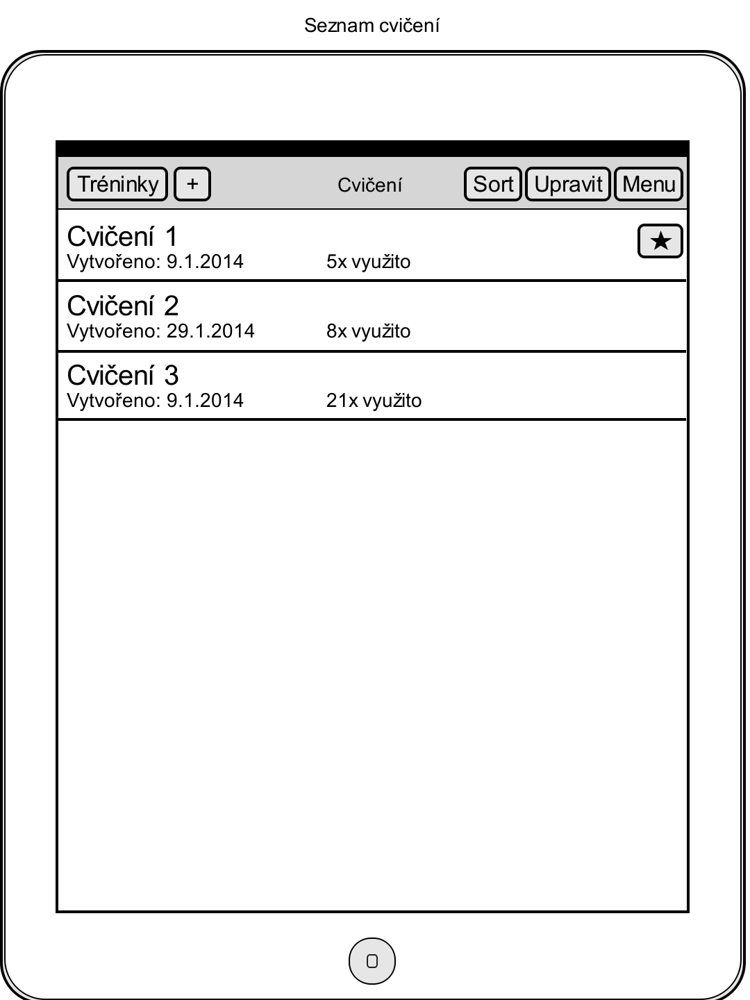
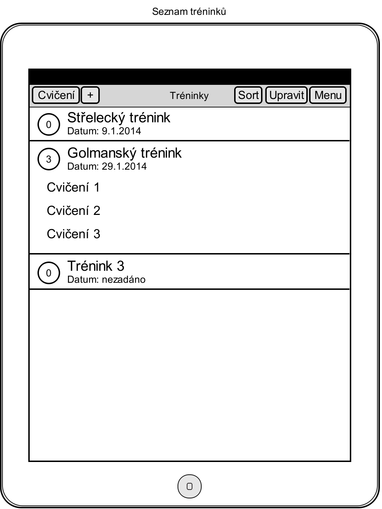
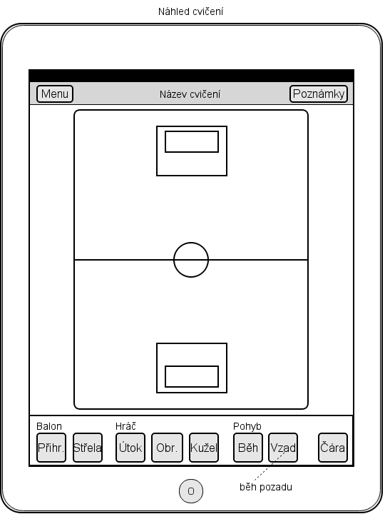
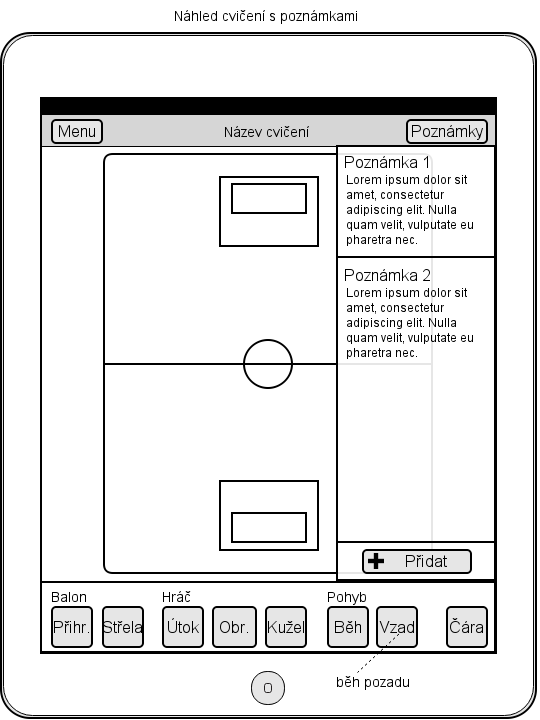
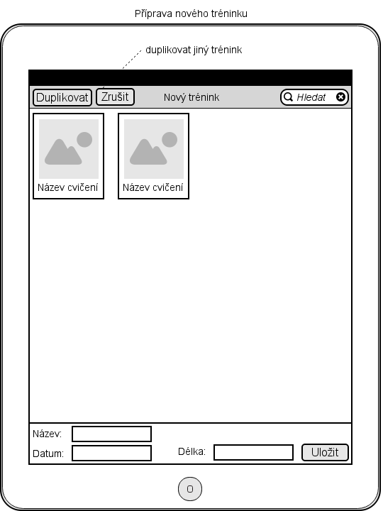
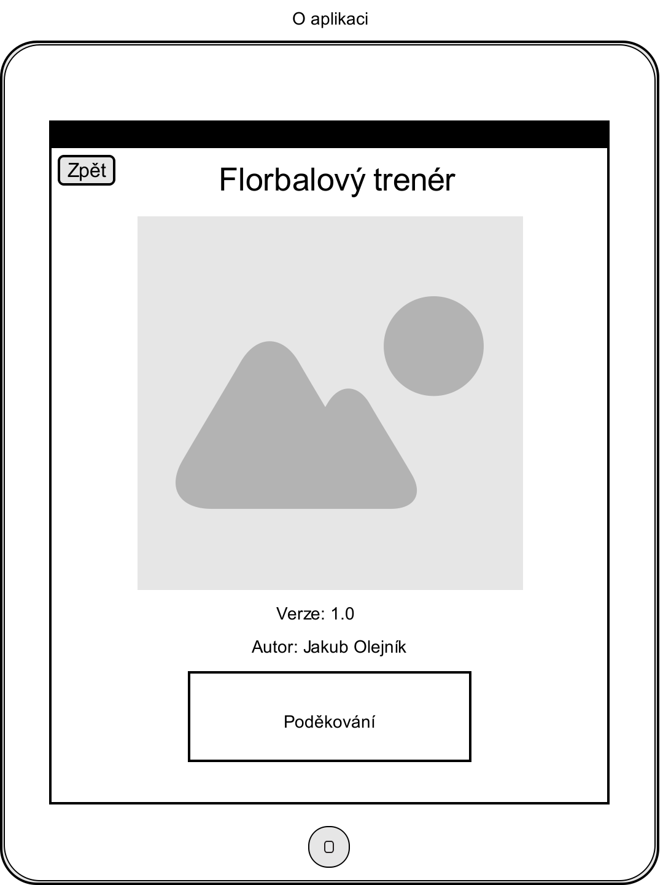

revize 1
Jakub Olejník
| Název aplikace: | Floorball Coach |
| Procesorová architektura: | armv7, armv7s, arm64, i386 (pouze testovací) |
| Podopora iOS: | Aplikace podporuje iOS 7.0 a vyšší. |
| SDK: | iOS 7.x |
| Podpora zařízení: | iPad 2 a novější |
| Podpora orientací zařízení: | Všechny orientace na výšku a na šířku, obrazovka s nakresleným cvičením - všechny orientaci na výšku |
Rozhraní aplikace se bude skládat z několika obrazovek, mezi kterými bude aplikace přecházet pomocí vhodné animace (konkrétní animace bude zmíněna u každé obrazovky zvlášť).
Hlavní nabídka slouží jako rozcestník aplikace. Obsahuje tlačítka, která umožňují přechod na jednotlivé další obrazovky.
Všechny přechody, které lze provést v hlavní nabídce budou využivat animaci fade in. Pouze při přechodu na obrazovku O aplikaci bude využita animace cover vertical
Rozložení prvků v hlavní nabídce bude vypadat následovně:
Tato obrazovka slouží k prohlížení a možnému otevření detailu vybraného cvičení.
Na této obrazovce budou o cvičení zobrazeny následující informace:
Na obrazovce bude možné se cvičeními manipulovat. Každé jednotlivé cvičení bude možné zařadit mezi oblíbené, popř. jej z oblíbených vyjmout. Dále bude možné cvičení zduplikovat.
Uživateli bude umožňěno zde cvičení mazat a to dvěmi způsoby. První způsob je mazání jednotlivě, pomocí gesta swipe (jako při škrtnutí textu propiskou) zprava doleva a následním tapnutím na tlačitko smazat, které se objeví v pravé části řádku. Druhou možností je výběr režimu úprav pomocí tlačítka upravit v horní liště. Následné pomocí tlačítka v levé části každého řádku lze zobrazit tlačítko smazat a cvičení odstranit.
V této verzi nebude umožněna hromadná manipulace.
Pro přechod na všechny obrazovky bude využita animace fade in. Pro přechod na obrazovku Seznam tréninků bude využita animace flip.
Rozložení prvků v seznamu cvičení bude vypadat následovně:
Tato obrazovka slouží k prohlížení a možnému otevření detailu vybraného cvičení.
Obrazovka vypadá stejně jako obrazovka Seznam cvičení s následujícími výjimkami:
Tato obrazovka slouží k prohlížení a možnému otevření detailu vybraného tréninku nebo cvičení.
Na této obrazovce budou o tréninku zobrazeny následující informace:
O cvičení zařazeném v tréninku bude k dispozici pouze informace o jeho názvu.
Na obrazovce bude možné s tréninky manipulovat. Uživateli bude umožňěno zde tréninky mazat a to dvěmi způsoby. První způsob je mazání jednotlivě, pomocí gesta swipe (jako při škrtnutí textu propiskou) zprava doleva a následním tapnutím na tlačitko smazat, které se objeví v pravé části řádku. Druhou možností je výběr režimu úprav pomocí tlačítka upravit v horní liště. Následné pomocí tlačítka v levé části každého řádku lze zobrazit tlačítko smazat a trénink odstranit. Stejným způsobem bude možné z tréninku cvičení vyřadit.
V této verzi nebude umožněna hromadná manipulace.
Pro přechod na všechny obrazovky bude využita animace fade in. Pro přechod na obrazovku Seznam cvičení bude využita animace flip.
Rozložení prvků v seznamu tréninků bude vypadat následovně:
Tato obrazovka slouží k prohlížení, kreslení a psaní poznámek ke cvičení. Na obrazovce také lze cvičení přejmenovat, toto je možné po tapnutí na název cvičení.
Na této obrazovce se nachází schéma hřiště, do kterého je možné kreslit. Mimo schéma hřiště kreslení není možné. Kreslení je možné pomocí předpřipravených nástrojů.
Ke každému cvičení je možné přidávat textové poznámky. Poznámka obsahuje název a text.
Po tapnutí na tlačítko Poznámky v horní liště se zobrazí panel s poznámkami. Opětovným tapnutím je panel skryt. Poznámky lze přidávat po klepnutí na tlačítko Přidat, které se v panelu nachází. Po tapnutí na tlačítko Upravit lze poznámky hromadně upravovat a mazat
Náhled cvičení:
Náhled cvičení s poznámkami:
Tato obrazovka slouží ke spravování konkrétního tréninku. Na obrazovce jsou zobrazena cvičení, která jsou v tréninku zařazena a cvičení, která je možné do tréninku zařadit, tato cvičení jsou navíc rozdělena do dvou částí (oblíbená a ostatní). Pro lepší orientaci jsou zobrazeny náhledy cvičení.
Na obrazovce je možné trénink přejmenovat tapnutím na jeho název. Cvičení jsou do tréninku zařazena tapnutím na cvičení, které chce uživatel zařadit. Další možností je přetažení na požadované místo v tréninku. Lze měnit pořadí jednotlivých cvičení jejich přetažením. Přetažením je zároveň možné cvičení z tréninku vyřadit.
Návrh rozmístění prvků na obrazovce:
Obrazovka slouží pro zobrazení informací o autorovi aplikace.
Návrh rozmístění prvků na obrazovce:
Pro usnadnění práce florbalového trenéra bude aplikace podporovat specifickou florbalovou symboliku.
Tento nástroj znázorňuje hráčův běh. Jedná se o plnou čáru, která je zakončena šipkou, která značí směr běhu.
Tento nástroj znázorňuje střeulu. Jedná se o dvojitou plnou čáru, která je zakončena šipkou, která značí směr střely.
Tento nástroj znázorňuje přihrávku. Jedná se o přerušovanou čáru, která je zakončena šipkou, která značí její směr.
Tento nástroj znázorňuje pozici hráče. Jedná se o kružnici, se kterou po umístění není možné hýbat.
Tento nástroj znázorňuje pozici hráče. Jedná se o trojúhelník, se kterým po umístění není možné hýbat.
Tento nástroj znázorňuje pozici kužele. Jedná se o kříž, se kterým po umístění není možné hýbat.
Tento nástroj umožňuje v aplikaci nakreslit jakýkoliv prvek, není zakončen šipkou.
Tento nástroj umožňuje smazání jakéhokoliv z předcházejích nástrojů.
Pro úspěšné dokončení aplikace, musí být úspěšně provedeny následující testovací scénáře. Scénáře pokrývají pouze nejdůležitější funkce aplikace.
Předpoklady: test vyžaduje existenci alespoň jednoho cvičení a alespoň jednoho tréninku.
Předpoklady: test vyžaduje existenci alespoň jednoho tréninku, který obsahuje nějaké cvičení.
Předpoklady: test vyžaduje existenci alespoň jednoho tréninku.
Předpoklady: test vyžaduje existenci alespoň jednoho cvičení.
Předpoklady: test vyžaduje existenci alespoň jednoho cvičení s alespoň jednou poznámkou.